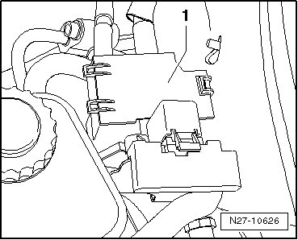
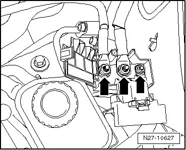
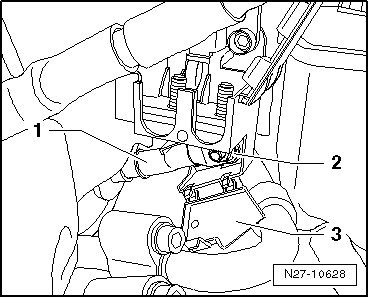
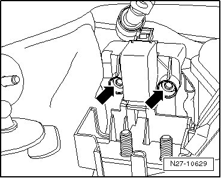
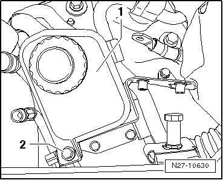
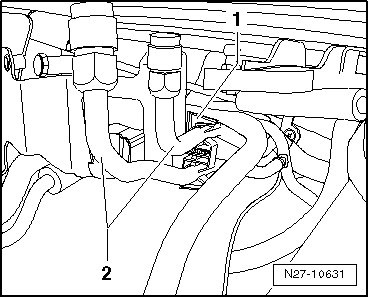
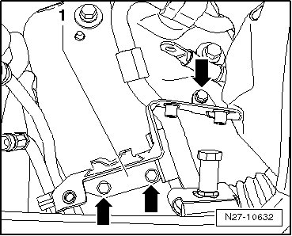

Jump Start Point, through 04.05
Jump Start Point, through 04.05
Special tools, testers and auxiliary items required
• Torque Wrench (V.A.G 1331/)
Removing
CAUTION!
When disconnecting and connecting the battery, always perform the work procedure as described in the repair information --> [ Battery, One-Battery Layout, Disconnecting and Connecting ] Battery, One-Battery Layout, Disconnecting and Connecting. Not adhering to sequence will result in the deactivation of Main Battery Switch -E74- and subsequent damage to electrical system components.
- Disconnect battery --> [ Battery, One-Battery Layout, Disconnecting and Connecting ] Battery, One-Battery Layout, Disconnecting and Connecting.
- Fold up cover - 1 -.

• The illustrations show the external starting point on the V6 Touareg. Vehicles with other engines have only two lines connected.
- Remove mounting nuts - arrows - and remove connected lines from connector threads.

- Fold cover up - 3 -, remove mounting nut - 2 - and remove line - 1 - from connector threads.

- Remove both mounting bolts - arrows - and remove external starting point housing upward out of vehicle.

- Remove hydraulic oil reservoir - 1 - mounting bolt - 2 -, remove hydraulic oil reservoir - 1 - from bracket and lays it aside with hoses connected.

- Unclip both refrigerant lines - 2 - from bracket - 1 -.

- Remove three mounting bolts - arrows - and remove hydraulic oil reservoir and external starting point bracket - 1 - from vehicle.

Installing
Install in reverse order of removal, noting the following:
- When installing hydraulic oil reservoir, ensure it is engage correctly in reservoir and external starting point bracket.
- Tighten all the fasteners to the specifications --> [ Jump Start Point Assembly Overview, through 04.05 ] Jump Start Point Assembly Overview, through 04.05.
CAUTION!
• When connecting battery, always perform work procedure as described in repair information --> [ Battery, with Auxiliary Battery or Two-Battery Layout, Disconnecting and Connecting ] Battery, with Auxiliary Battery or Two-Battery Layout, Disconnecting and Connecting. Not adhering to sequence will result in the deactivation of Main Battery Switch -E74- and subsequent damage to electrical system components.
• Observe notes for threaded connections of battery terminals --> [ Battery Post/Terminal ] Battery Post/Terminal.
- Reconnect battery --> [ Battery, One-Battery Layout, Disconnecting and Connecting ] Battery, One-Battery Layout, Disconnecting and Connecting.